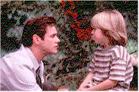

Contents | Features | Reviews | News | Archives | Store |
 |
|
| Movie Credits | Buy It! |
Liar Liar
Review by Eddie Cockrell
Directed by Tom Shadyac Starring Jim Carrey, Maura Tierney, Screenplay by Paul Guay and Stephen Mazur |
The inevitability of Jim Carrey was, in retrospect, obvious; in a culture where explicit brutality shares equal time with sardonic humor and forced sincerity on the evening news, if Carrey hadn't come along on his own, our culture would've made him up sooner or later. A volatile mix of childlike human and malevolent cartoon, a toned-down Carrey toiled in television for what seemed like an eternity -- showing jagged flashes of wit on "In Living Color" -- before bursting on the scene with a crisp string of unique, genre-bending, puerile hit comedies: Ace Ventura: Pet Detective (1994) begat The Mask (1994), which begat (you know, rhymes with "shat") Dumb and Dumber (1994), which got him in to the more mainstream Batman Forever (1995), which begat Ace Ventura: When Nature Calls (1995). All these films were gleefully obnoxious, and all these films made big money; can you say "acting out"?
Then came the legendary $20 million deal (which, given the size of the above film's grosses in relation to Carrey's contribution to them, isn't surprising but prompted much legitimate criticism along the lines of why any one person should be paid that kind of money) and the dark, malicious The Cable Guy (1996). Pretty unfunny by most standards, the film perhaps unwittingly revealed the mean-spirited nature of Carrey's demented mimicry and orifice-based humor by stripping the story of off-the-wall fantasy elements and exotic locations and trappings in favor of a more gritty look. Audiences were startled by its tone -- expecting as they were another flight of fancy -- and the film was not successful (ironically, the same thing happened to the Farrelly brothers after the conflicted Dumb and Dumber, although Kingpin was certainly funnier for having the courage of its mean-spirited convictions). Clearly, a shift in strategy was needed, one that preferably preserved the essence of his established persona without alienating the audience: a kinder, gentler Jim Carrey, but still with that undercurrent of insurrection.
Thus was Liar, Liar born. Directed by Tom Shadyac, who helmed the kinder, gentler, funnier and, uh, larger Eddie Murphy of The Nutty Professor (itself a remake of the quintessential Jerry Lewis film that is to many the root of Carrey's inspiration), Liar, Liar puts one in mind of James Cameron's solution to the violence inherent in the Terminator films: presumably to lessen the trauma of an effective killing machine, Cameron inserted a plot point in Terminator 2: Judgment Day (1990) that had the aghast Edward Furlong character instruct the cyborg to only shoot people in the kneecaps. Thus was wanton violence made justifiable. In much the same way, Shadyac and Carrey (who first worked together on the first Ace Ventura film) have crafted a story in which an, unexplained bit of magic allows an insensitive father to learn the value of parenting. Tim Allen and director John Pasquin pulled off the same trick (with the same implausibility) in the The Santa Clause -- another hit -- while Harold Ramis has quietly done it with the proper panache not once but twice, in the critically praised Groundhog Day (1993) and the woefully underrated Multiplicity (1996).
Carrey plays Fletcher Reede, a glib but shallow Los Angeles defense attorney with no time for his five-year-old son Max (Justin Cooper). When his conniving boss Miranda (Amanda Donohoe, in a role similar to the one she played in the sunset seasons of "L.A. Law") forces him to miss the boy's birthday party -- much to the chagrin of Reede's ex-wife Audrey ("Newsradio"'s Maura Tierney), who may or may not move away with her cloddish boyfriend Jerry (Twister's Cary Elwes in the Ralph Bellamy role) -- Max makes a wish before blowing out the candles on his birthday cake that Daddy won't be able to lie for just one day.
For no reason at all the wish comes true, forcing Fletcher to rethink his high-stakes defense of a conniving wife (Jennifer Tilly) out to fleece her husband of his fortune. Of course Fletcher pulls victory from the jaws of defeat, and of course his triumph is empty without the love of his family. At this point Liar, Liar shows an inspired bit of pure lunacy as Fletcher chases down the plane in which Audrey, Max and Jerry are about to fly away.
Although he looks distinctly stiff and uncomfortable in the first reel or so, the high energy level typical of all his films soon kicks in and he pulls the movie along, as he did with his other hits, through sheer force of will. Coincidentally, Carrey flowers at about the time Max's wish does, conveniently allowing the comic to once again engage in his physical brand of comedy without much attention to nuance or logic (in one scene set in a courthouse men's room, he hits the "marble" wall so hard during his schtick that a mirror shakes; for all the money they lavish on him, couldn't the producers have built stronger sets?). Particularly memorable is the "pen is blue" routine, while far more mawkish is the bookend bit in which Fletcher lovingly terrorizes his son with "The Claw" -- his own hand scrunched into the shape of snapping jaws. Particularly refreshing, and wholly unexpected, are a couple of pointedly self-deprecating references, especially an exchange between Fletcher and Max where the boy asks if it's true that people who cross their eyes risk staying that way forever and the response is that some people make a very good living at it.
But despite the clever closing credit outtakes, in which Carrey's flubbed lines and Kurtz' rather panicky put-downs (more subtle proof that Carrey can laught at himself?) make it seem as if the film was the high point to date in the careers of all involved, there are telltale signs that Liar, Liar has been severely tweaked: where, for instance, is 13th billed Randall "Tex" Cobb (Raising Arizona), a menacing hulk of a character actor now glimpsed briefly in a jailhouse scene that feels severely truncated?
It has been no secret in Hollywood that Carrey aspires to weightier fare, which makes Liar, Liar oddly touching: he needs to prove his box office clout to soothe nervous backers, but the more hits he cranks out in wacky mode the more nervous the money people will be about funding a serious Carrey vehicle. Still, Carrey's public desire to be considered a dependable, approachable, manageable nice guy capable of carrying a "serious" film must be seen one step closer to reality, especially since at this writing Liar, Liar is by far and away the most successful film of the year to date with a torrid pace that averages out to $20 million a week over its first two months (remember his crack at the Oscar ceremony following the film's spectacular opening weekend?). Obviously, whatever elements disenchanted audiences about The Cable Guy have been rotated and balanced, and fixed to spectacular effect. Jim Carrey is back among the box office golden boys, with all the comedic baggage -- pro and con -- that special place in the Hollywood firmament entails.
Contents | Features | Reviews | News | Archives | Store
Copyright © 1999 by Nitrate Productions, Inc. All Rights Reserved.